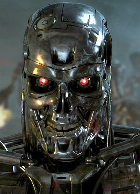
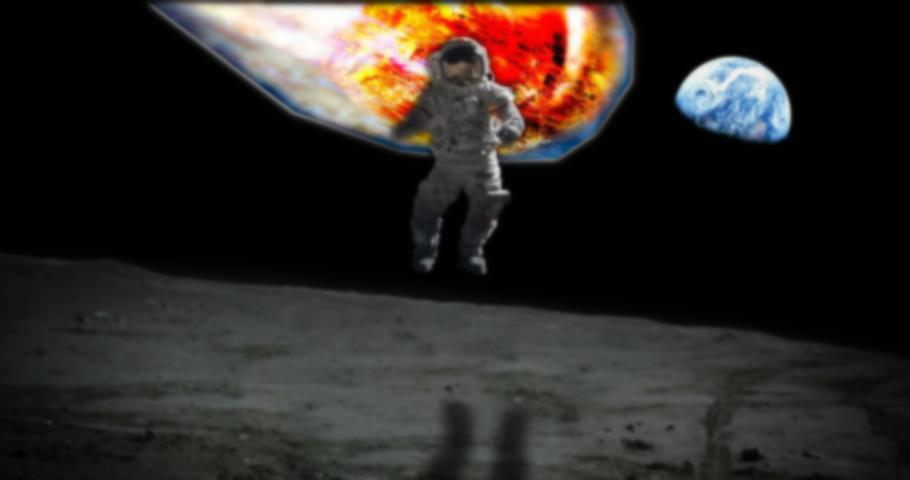
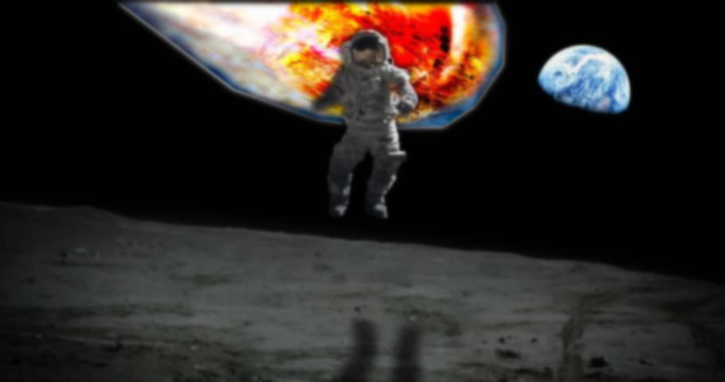
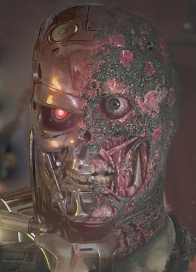

In this project, we examine frequency blending, Gaussian stack multiresolution blending, and Poisson blending, as methods to seamlessly blend images together. The results are entertaining, profound, and deeply expressive.
1.1 Sharpening Warmup
1.2 Hybrid Images


Seaguin, Pengull, Cute Flying Rat of the Sky (+ More Hybrid Images)

+ Fourier Analysis
In order from left to right: fft(im1), fft(im2), fft(low(im1)), fft(high(im2)), fft(final)
The FFT converts regular images into their frequency representations. These frequencies are filtered out in obht passes. In the low pass, the image becomes darker due to high frequencies being filtered out, and similarly for the image that underwent a high pass. The final result is a blend of these two filtered images, as evidenced by the large bright cross formed in the center in the final image.


Whose Hooves? (+ Failure)
I attribute this to great contrasts in the lighting of the source images, the fact that they don't overlap, and misaligned points (determined by a mistaken hand, of course).
Rose Leslie, the Wildling (+ More Hybrid Images)

1.3 Gaussian and Laplacian Stacks
(Please see iPython notebook for implementation and results.)
I implemented this the same way mostly everyone did. For the Gaussian stack, I applied Gaussian filters successively to an image. The Laplacian stack is formed from the differences between the respective Gaussian stack levels i.e. LaplacianStack(image)[i] = GaussianStack(image)[i] - GaussianStack(image)[i+1].
1.4 Multiresolution Blending
Oraple Blend


Two Faced Terminator (More Multiresolution Blending)
He's got multiple personalities.

Houston, we have a problem.
 

2.2 Poisson Blending
Winter is coming...
Idiocracy
+ Failure
The Rose and Jack Conspiracy
While entertaining, this photo is not very realistic due to the least squares solver wanting to match Jamie from Mythbusters to the blue, moon-lit background of the Jack and Rose Titanic shot. Still, the blend is nice.
+ Blending Algorithm Comparison
Left: Hybrid Frequency; Middle: Gaussian Pyramid; Right: Poisson Blending
The only morality in a cruel world...is artificial intelligence.
The best approach for these images was Poisson blending. This worked because the Gaussian pyramid always produced a noticable seam, as well as differences in the background color. The Poisson approach seems to be better when images agree in color scheme and need to be "imposed" on each other, whereas the Gaussian method works by seamlessly hiding a rough cut. Furthermore, the hybrid image method works when we want to compose two images together that need to be seen individually depending on focus level and distance.
